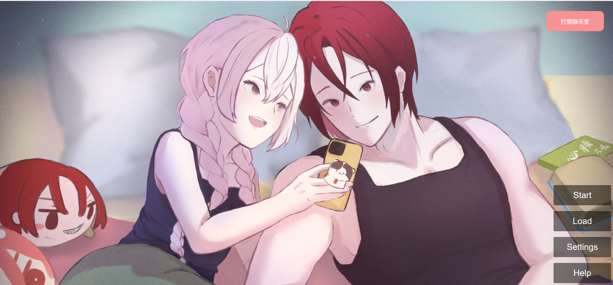
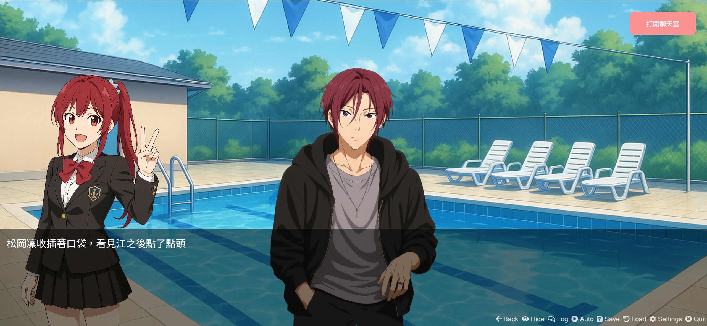
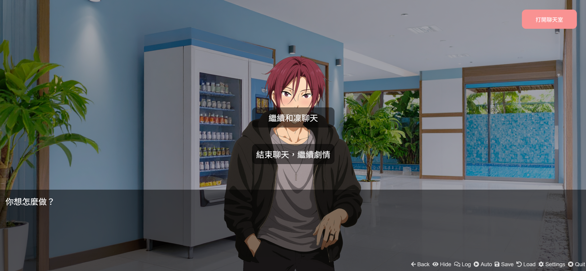
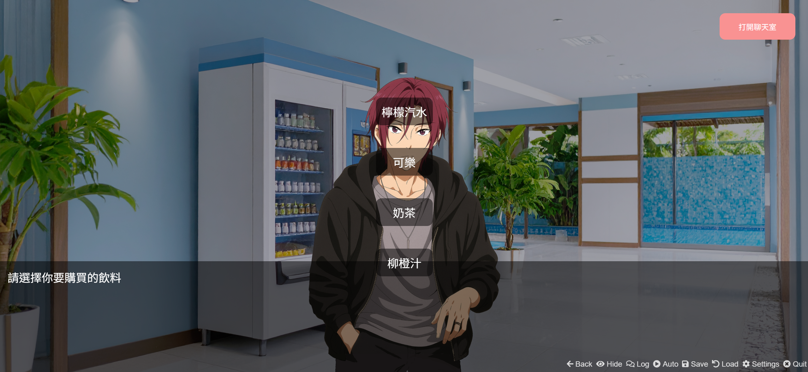
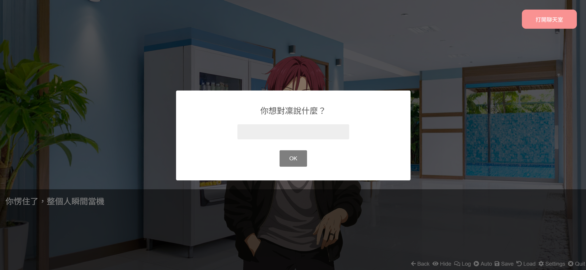
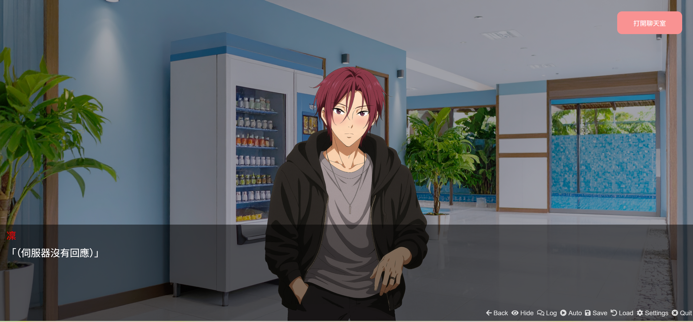
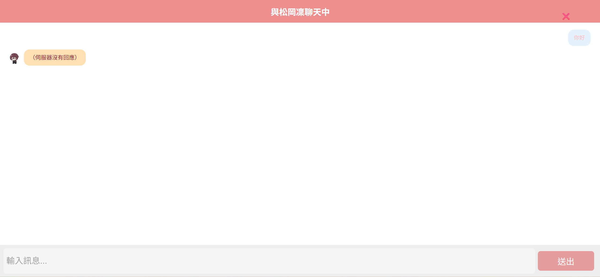

劇情規劃
討論主線架構、戀愛互動節奏、分支設計、選項規劃與角色互動流程。
以 Monogatari 製作的互動視覺小說作品，結合課堂學習的 n8n 工作流程與 AI 聊天室設計， 嘗試把劇情分支、角色互動與自由對話整合成一個戀愛向敘事體驗。

類型：視覺小說 / AI 聊天互動
工具：Monogatari、n8n、Gemini API 研究
狀態：原型開發中，聊天室 API 尚未完成串接
角色：以松岡凜為發想的二創互動角色
這個專案的創作動機來自我對動畫角色松岡凜的喜愛，因此希望製作一款能與角色談戀愛的視覺小說。 作品分成固定劇情模式與自由聊天模式，讓玩家一方面能跟著劇情推進關係，另一方面也能透過聊天室和角色互動。

我負責世界觀、劇情架構與分支設計，規劃玩家和松岡凜相遇、對話、選擇與關係推進的流程。 劇情中加入選項、輸入框和分支回應，讓玩家的回答能影響互動節奏。

在 AI 協作過程中，我整理松岡凜的角色個性、說話語氣與互動邏輯，建立對話範例， 讓角色在自由聊天模式中能維持較一致的語氣與情緒反應。
專案開發期間，我利用生成式 AI 作為共同設計工具，協助討論劇情架構、分支走向、選項內容與角色互動流程。 AI 也協助整理角色語氣、建立對話範例，並作為技術研究輔助，幫助理解 Monogatari 架構、n8n 工作流程、 Gemini API 串接方式與 AI 記憶機制。
討論主線架構、戀愛互動節奏、分支設計、選項規劃與角色互動流程。
分析松岡凜的人格特徵，整理語氣規則，建立自由聊天模式的對話範例。
研究 Monogatari 專案架構、n8n 工作流程、Gemini API 串接與 AI 記憶機制。
規劃劇情模式、自由聊天模式，以及兩種模式之間的切換方式。




目前遊戲已完成 Monogatari 劇情畫面、選項互動、玩家輸入與聊天室介面原型。 因 Gemini API / n8n 串接尚未完成，聊天室會顯示「伺服器沒有回應」， 這也作為原型階段的錯誤回饋畫面，提示目前仍待完成後端串接。
這個專案中，我的角色最接近敘事設計與 AI 角色設計。敘事設計負責世界觀、劇情架構與分支設計； AI 角色設計則負責松岡凜的人格設定、對話風格與互動邏輯，讓視覺小說與聊天室能形成一致的戀愛互動體驗。